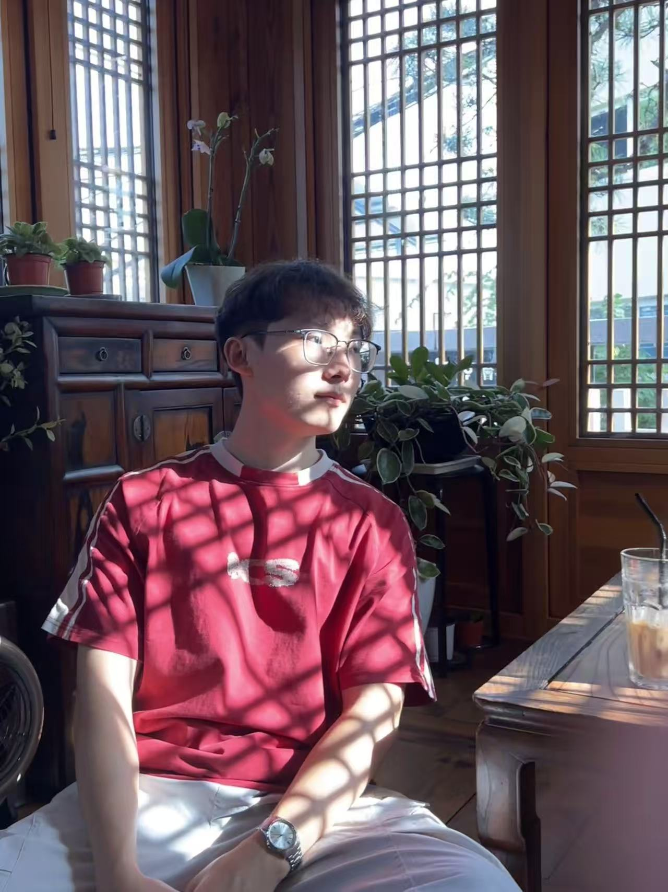
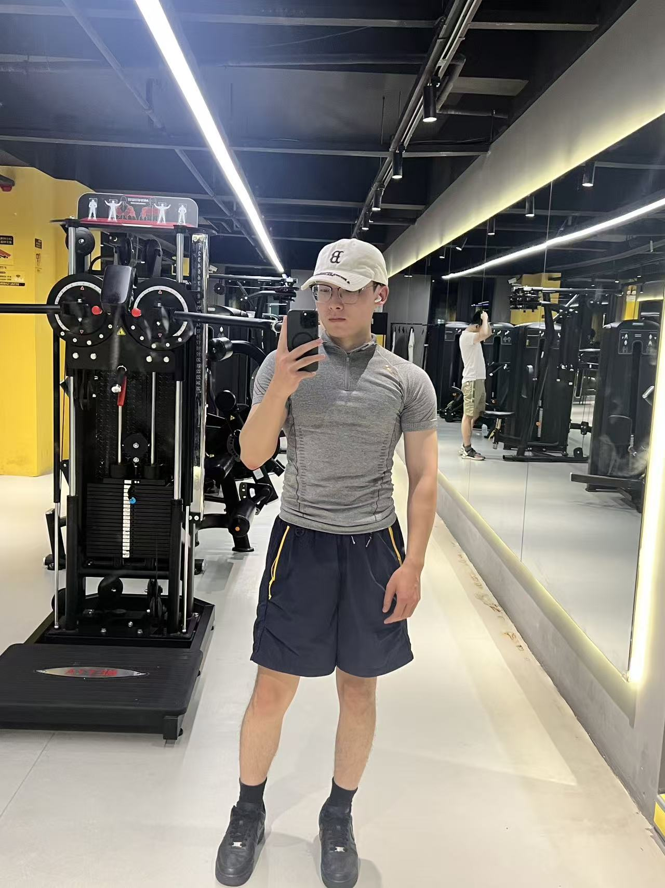

Glycosylation in Tumor
关注O-糖基化和N-糖基化等异常糖基化在肿瘤进展、转移和诊疗策略中的作用。
Pharmacy · Research · Life
我是 Kaiming Liu，直博就读于浙大药学院。关注糖基组CRISPR筛选与细菌-肿瘤互作的机制探究、卵母细胞发育调控相关机制研究。
Research interests
关注O-糖基化和N-糖基化等异常糖基化在肿瘤进展、转移和诊疗策略中的作用。
开发并优化深度学习算法在卵母细胞发育调控领域的应用，试图发现翻译调控的新机制。
利用CRISPR screening等分子生物学手段对瘤内菌与肿瘤互作的机制进行探索

About the site
Life & notes
和好朋友在首尔江边畅饮，很充实的一次旅行。
在玄武校区参加学术会议，近距离接触科研前沿。匆忙赶场，但收获很实在。

在校外找了一家健身房，环境很好，希望自己每天都有时间、精力来健身。